Magic: the Gathering™ Card Price Distribution
I started becoming interested in Magic: The Gathering™ card finance a few months ago. I don't have nearly enough business savvy to follow financial news, but I know enough about M:TG to be able to understand what's going on in the tiny financial microcosm of trading cards (and the insightful analysis from sites like MTGStocks.com and MTGPrice.com).
One thing I noticed while doing some research into Magic prices was how there is a small set of cards that have very high prices - Power Nine, Tarmogoyf, Wasteland, Force of Will - but the vast, vast majority of cards cost less than a dollar. I decided to take a step back and look at the distribution of card prices - not just looking at individual cards, but the probability distribution of prices for all cards.
I took advantage of the DeckBrew API, which gives easy access to the current median prices over at TCGPlayer.com. I first obtained this data set in January 2015 (pre-Fate Reforged, pre-bannings). That being said, I only have card prices from a single day - I do not currently have access to time series data from TCGPlayer. (As of recently the DeckBrew API's price information is unavailable, otherwise I could have taken multiple snapshots of card price distributions at different times.)
I examined the median price data for cards from all sets except for reprint sets such as Commander, Duel Decks, promotional cards (Judge, DCI, FNM, etc), and Modern Masters. I also excluded cards from Alpha and Beta, whose prices are artificially inflated due to their extreme rarity. I ignored the prices of foils. I also ignored basic lands (with the few exceptions of full-art lands or certain promos, these are all worth about the same).
Here's what I found: if you plot a histogram of the median prices of all cards (including multiple printed versions), you get a graph that looks like this:
Out of the 18,000 or so individual Magic cards printed, only 2155 are worth more than $1, only 422 are worth more than $10, and only 52 are worth more than $100. This jibes with the initial observation that there are a great many cards worth very little, but a small number of cards with enormous prices.
Re-plotting the same data set on a logarithmic scale, it becomes clearer just how vast the range of card prices is, as well as how there are far fewer very expensive cards than inexpensive cards.
Distributions like these, that are heavily skewed, are sometimes referred to as having "heavy tails." This means that there are cards of all prices, but that there are many fewer higher-priced cards than lower-priced ones. The majority of cards ever printed are cheap, a small subgroup is expensive, and an even small subgroup is even more expensive than that.
If you're curious, here are the cards sitting way out in the tail of the distribution:
| 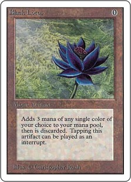 | 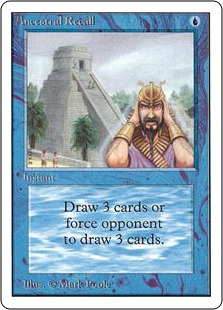 | 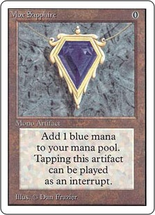 | 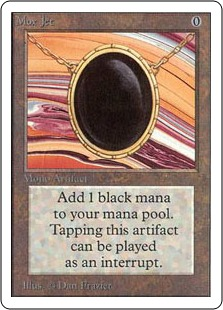 | 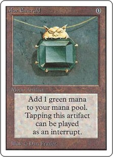 |
Black Lotus Unlimited $5000 |
Ancestral Recall Unlimited $1850 |
Mox Sapphire Unlimited $1500 |
Mox Jet Unlimited $1400 |
Mox Emerald Unlimited $1275 |
It might be fair to think that rarity is what gives rise to the right end of the distribution. Here's what the price distribution looks like with only rares (and mythic rares) included:
The shape of the distribution is largely unchanged (many of the least expensive cards have been removed from the left-hand side), particularly out in the right-hand tail. So yes, the heavy tail of the price distribution shown above is mostly made up of rare cards. Even so, there is still a heavy skew, with the vast majority of all rare cards being worth very little. It isn't enough to say that the skewed distribution of all card prices shown above comes from the price differences due to rarity alone.
What about the prices of commons and uncommons? We can produce similar plots for both of those cases and find that the heavy tails are still there!
Take note that the extent of the rightmost tails of these price distributions - they are not nearly as extended as the tails for the rares. The commons in particular have a very short tail, with very few of them coming close to $10.
| 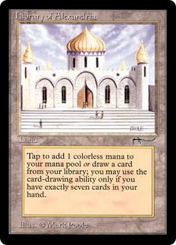 | 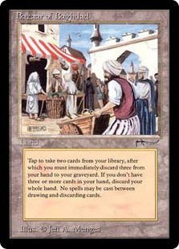 | 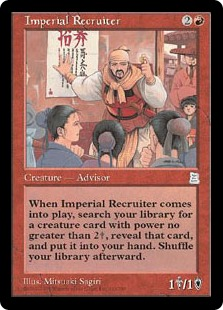 | 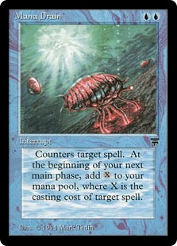 | 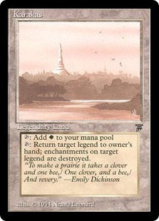 |
Library of Alexandria Arabian Nights $383 |
Bazaar of Baghdad Arabian Nights $371 |
Imperial Recruiter Portal: Three Kingdoms $278 |
Mana Drain Legends $200 |
Karakas Legends $148 |
Again, for those of you who are interested, these are the most expensive uncommons and commons. The uncommon heavy tail is made up of Vintage and Legacy staples, many of which have been re-assigned rare status for Vintage Masters on MTGO.
| 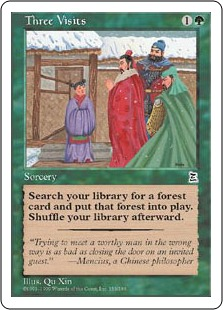 | 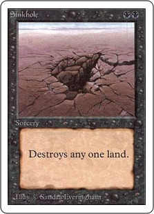 | 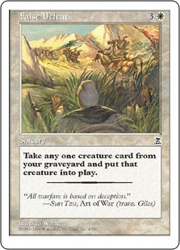 | 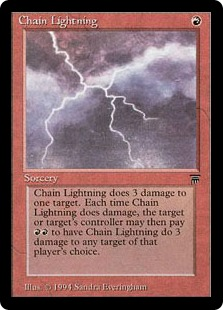 | 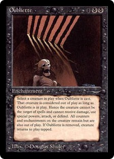 |
Three Visits Portal: Three Kingdoms $36 |
Sinkhole Unlimited $26 |
False Defeat Portal: Three Kingdoms $18 |
Chain Lightning Legends $15 |
Oubliette Arabian Nights $10 |
The most expensive commons, on the other hand, are dominated by functional reprints from Portal: Three Kingdoms and other cards prized for their scarcity - of the top five only Chain Lightning sees regular play anymore. (Not shown here: #6 and #7 on the list are Serum Visions and Portal 2 Sleight of Hand, and this was before the disappointment of MM15.)
It appears that in the case of uncommon and rare cards, the highest-price cards are ones that are in high demand for Vintage and Legacy and that also are hard to come by due to relative rarity. The expensive commons, in a similar vein, are dominated by collectible cards from hard-to-find sets like Portal. Why don't we see whether in general the heavy tails of these price distributions come from scarcity alone by ignoring these kinds of cards: Let's look at the set of cards playable in Modern and Standard only.
| 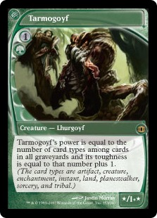 | 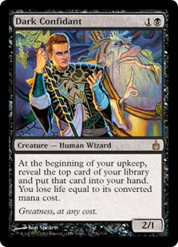 | 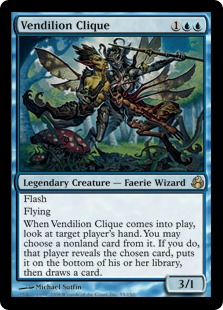 | 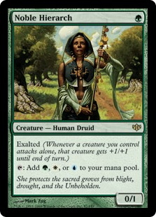 | 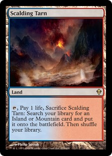 |
Tarmogoyf Future Sight $180 |
Dark Confidant Ravnica $78 |
Vendilion Clique Morningtide $69 |
Noble Hierarch Conflux $66 |
Scalding Tarn Zendikar $55 |
For the price distribution of Standard-legal cards, I have plotted two distributions. The upper curve includes all printings of all Standard-legal cards and the lower curve includes only the most recent printings. (I differentiate between the two simply because including previous printings means that the six most expensive cards in pre-Fate Reforged Standard were the Onslaught fetch lands and Thoughtseize from Llorwyn.) Compared to the card pools available to Vintage/Legacy and even Modern, there are very few cards allowed in Standard. Despite this, we still do see a skew in the price distribution, with a few expensive (>$20) cards but most cards inexpensive (<$5).
| 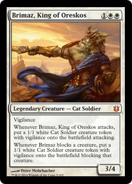 | 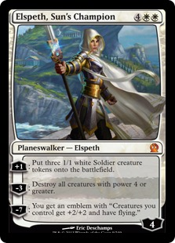 | 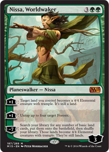 | 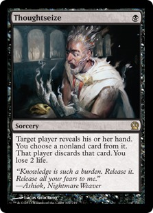 | 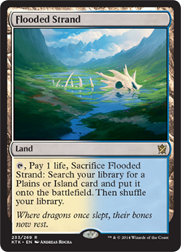 |
Brimaz, King of Oreskos Born of the Gods $25 |
Elspeth, Sun's Champion Theros $20 |
Nissa, Worldwaker M15 $19 |
Thoughtseize Theros $19 |
Flooded Strand Khans of Tarkir $19 |
Closing Thoughts
And now for some speculation about the data presented above: Wizards of the Coast, in printing Magic cards, essentially works like a central bank. They carefully control the supply of what cards are available to customers. Knowing this, it almost makes me wonder whether the heavy-tailed distribution of card prices is actually a benefit to the customer that in turn helps WotC maximize their profits.
Consider three different players who all are building decks for EDH. Some players want to build a Legacy-esque goodstuff deck that runs Duals and all kinds of other pricey high-powered cards. Other players are content to just buy the preconstructed decks and play them out of the box. Even other players just cobble together a pile of 100 cards leftover from FNM drafts.
Because of the way card pricing works, all three of these players will be able to play EDH together. The extended, heavy-tailed price distribution allows for participation of players who only have a few extra dollars alongside the players willing to sink thousands a year into the game. This makes the game more inclusive and fun for customers, but it also allows WotC to retain as many customers as they can. WotC has no direct control over the market prices of cards, I'd be surprised if they didn't keep a close eye on those prices in order to keep card prices accessible to as many customers as they can.
For the future, I am particularly interested in seeing how card price distributions change over time. Having only a single snapshot of the price distributions does illustrate how variable magic card prices are as well as how expensive cards tend to be outliers. Seeing how, if at all, price distributions change over time could also give some additional insights into players' willingness to pay to play in various formats. In particular, for Standard (and Modern, to a lesser extent) it would be interesting to see how the rightmost part of the tail changes in price over time. It would also be interesting to see statistically how cards that become popular after early release hype is over rise to replace cards in the tail of the distribution that were hyped and discovered to be useless.
If there are any economists out there who study price distributions, I'd love to help make this data set available to study questions as to what gives rise to the heavy tail in the price distribution for a product like Magic cards. There are lots of variables that go into determining card pricing, and trying to differentiate between them could be an interesting exercise. To what extent does the rarity of a card's printing relative to other cards affect its pricing? To what extent are prices correlated between cards, and does this lead to price inflation (e.g.: PainterStone)? To what extent is the heavy tail inflated due to "superstar" effects?
(Special thanks to Arjen over at MTGStocks.com, who turned me on to the DeckBox API!)
All Magic: the Gathering images and descriptions © Wizards of the Coast, Hasbro